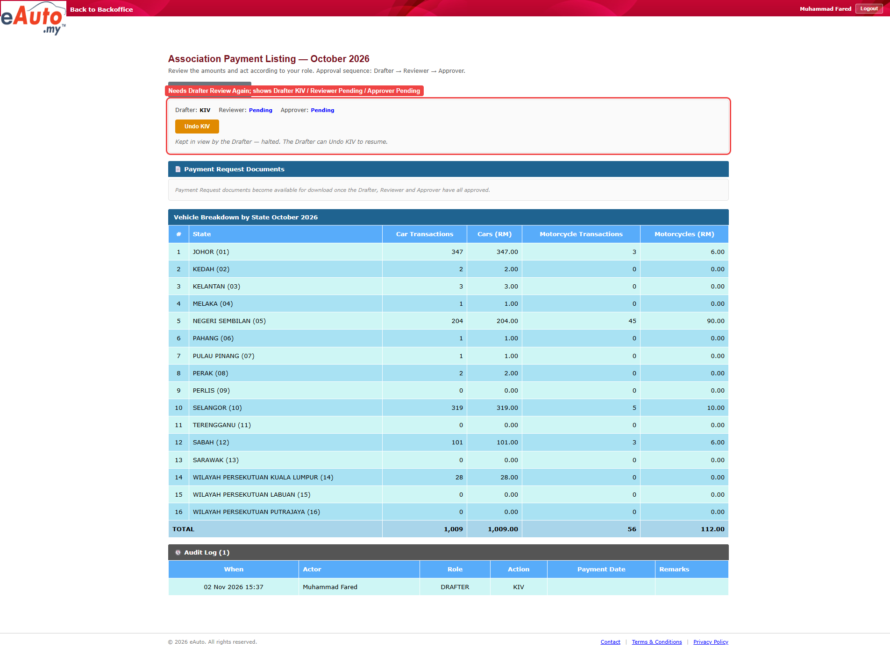

Actual: October 2026 shows Drafter KIV / Reviewer Pending / Approver Pending, with Undo KIV button and 1 audit row (DRAFTER, KIV) Expected: A month with Drafter Status Review Again, as the TS step 2 says. The SRD has no rule on this setup; the expectation comes from the TS row 7 (12028_TS23).
Triage: data (plausible) — Evidence image shows October 2026 already at Drafter KIV with one audit row 'DRAFTER KIV 02 Nov 2026 15:37'; a month in Drafter KIV cannot be a Review Again month, so the script's guard at utils/session.ts:137 threw correctly before clicking KIV.
Ruled out: Script read the wrong thing: the screenshot status bar matches the error text (Drafter KIV / Reviewer Pending / Approver Pending); Product defect: no KIV click happened, so KIV behaviour was not exercised; Login or timing: login succeeded as Muhammad Fared and the detail page fully loaded
Row 7 (12028_TS23) Test Objective: Verify the Drafter can KIV a month the Reviewer sent back. Test Steps: 1. Login to BO as Drafter 2. Click [View] on a month with Drafter Status Review Again 3. Click [KIV] Expected Result: Ensure: 1. Details -> Drafter Status KIV 2. Details -> New Audit Log row "Drafter — KIV"12028_TS23
Nothing on this. The expected result comes from the TS.

Error: Precondition not met: October 2026 shows Drafter KIV / Reviewer Pending / Approver Pending; this TS needs a month that is Drafter Review Again. Pick such a month on the 12028_TS23 row (12028_PREP can move a Pending month there).Run error · step "Check October 2026 is Drafter Review Again"